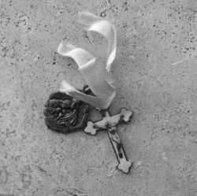
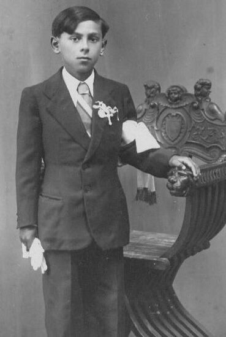
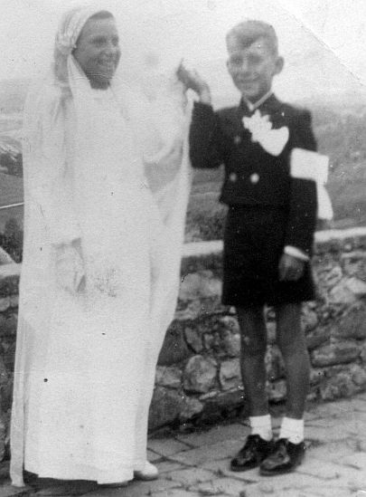
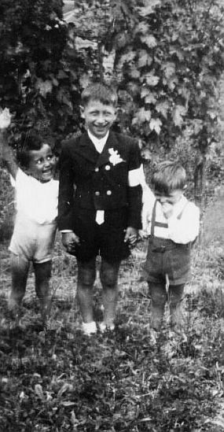
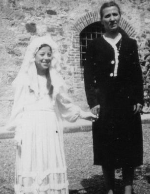

Cresime e Comunioni
(Cresime 1)
(Cresime 2)
(Comunioni 1)
(Comunioni 2)
Comunioni
Come la Cresima anche la “Prima comunione” era un momento particolare per i bambini delle comunità cristiane. Quel giorno in cui ricevevano per la prima volto “il Corpo di Cristo” era festeggiato dalle comunità e dalle famiglie in modo solenne, partecipato e sentito da tutti. I fanciulli vivevano intimamente la festa più toccante della loro fanciullezza:
"Il giorno più bello della vita", come è sempre stato definito.
Abbiamo visto, senza ripetere ulteriormente quanto detto, che ai miei tempi si passava a Comunione a 11/12 anni, dopo la Cresima, e il sacramento era vissuto con maggior consapevolezza e con più coscienza, grazie una più approfondita istruzione religiosa seguita in parallelo col ciclo scolastico elementare. La maggiore età aiutava inoltre a dare un diverso valore a tutto il contorno profano della Comunione, ossia ai regali, al pranzo, ai parenti e al vestito nuovo. La Comunione, celebrata il giorno festivo della Pentecoste da don Grandi e del Corpus Domini da don Ottorino, non si esauriva nella mattinata, ma vedeva impegnati i ragazzi anche nel pomeriggio con la partecipazione alla processione col Santissimo, e la domenica successiva di nuovo col vestitino da cerimonia tutti in chiesa alla santa messa per quella definita come la
“Seconda comunione”. In questa settimana i bambini comunicati partecipavano giornalmente alla messa e si accostavano all’eucaristia.

Questo sacramento aveva i suoi simboli e i ragazzi comunicati portavano nel giorno della cerimonia una fascia di seta al braccio destro come segno distintivo, mentre per tutti, maschi e femmine, era d’obbligo un crocifisso con medaglia e fiocco, da attaccare al petto. Per il crocifisso erano stabiliti dei tempi: si doveva portare una settimana attaccato alla maglietta e un’altra settimana sotto il golf o la maglia.
Crocifisso e medaglia del 1958.
Sul retro la scritta: Ricordo della mia Prima comunione.
Si dava anche più rilievo ai santini che, se poco documentati per la Cresima, non mancavano mai alla Comunione: una tradizione diffusasi a fine Ottocento. Al contrario della Cresima, registrata in Curia come dato essenziale per poter accedere poi al matrimonio, delle prime comunioni annuali non sono rimaste registrazioni parrocchiali. Tutto è affidato alla memoria delle famiglie, le quali hanno conservato santini, fotografie di gruppo scattate nel giardino parrocchiale e quelle singole dei propri figli. Tra i ricordi religiosi più belli il piccolo libretto di preghiere regalato da don Ottorino insieme a una coroncina. Il vestitino nuovo era d’obbligo per la Comunione, tanto più che era poi indossato nelle domeniche. Ma non sempre era stato così per alcune famiglie in perenne difficoltà economica, le quali pensavano bene di confezionare abitini semplici o di riciclare i vestitini, come ad esempio in casa Innocenti dove, ricorda Terzilio, con lo stesso vestitino ci passarono a Comunione quattro fratelli.
Le immagini che seguono ci riportano a quel clima gioioso delle Prime comunioni.
1931/32. Giorno della Prima comunione per Settimia Brogi (a destra) e Albana Tacconi, entrambe del 1919. La piccola che si intravede è Lara Brogi (nata nel luglio 1929).
Comunioni in casa Losi nel 1941. Alba (1930), a destra, e Milena (1931) circondate dai familiari. Da destra: Duilia, Alda, Maria, Damino e Liliana.
Piera Rossi nel 1941. Vestito confezionato da Anna Rossi, in organdis e rifinito in trina. Dopo la festa venne adattato e scorciato per la domenica dalla sorella Gina.
1941. La famiglia Rossi dopo il pranzo della Comunione di Piera ripresa dallo zio Guido con la sua Ferrania a soffietto alla strada per il Dorcio. In piedi da destra: Gina, Mario, lo zio Bruno Rodani, Egisto Rossi e Nello Rodani. In basso: Piero (col lutto) e Maria. Pierina si è già tolta il vestito da Comunione che indossa nella foto della pagina precedente.
Comunioni a Quercia nel 1939. Si riconoscono soltanto Lea Oretti e Adelmo Finetti.




In alto da sinistra: Adelmo Finetti, Benito Bandini e Alba Losi (14 giugno 1942), Mauro Tognazzi e Anna Florindi
Paola Mori nel giorno della Prima comunione con la cuginetta Laura alle prese con un “pinguino” nel 1958/59.